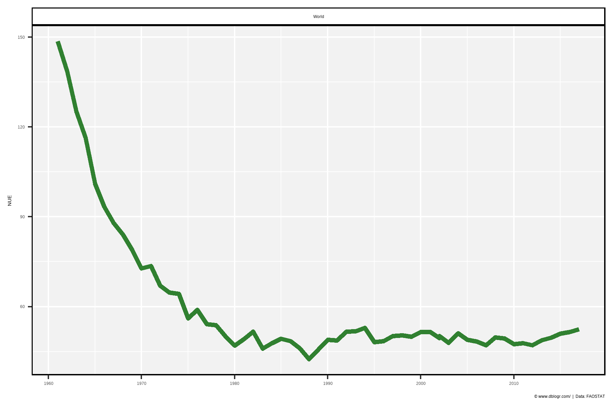
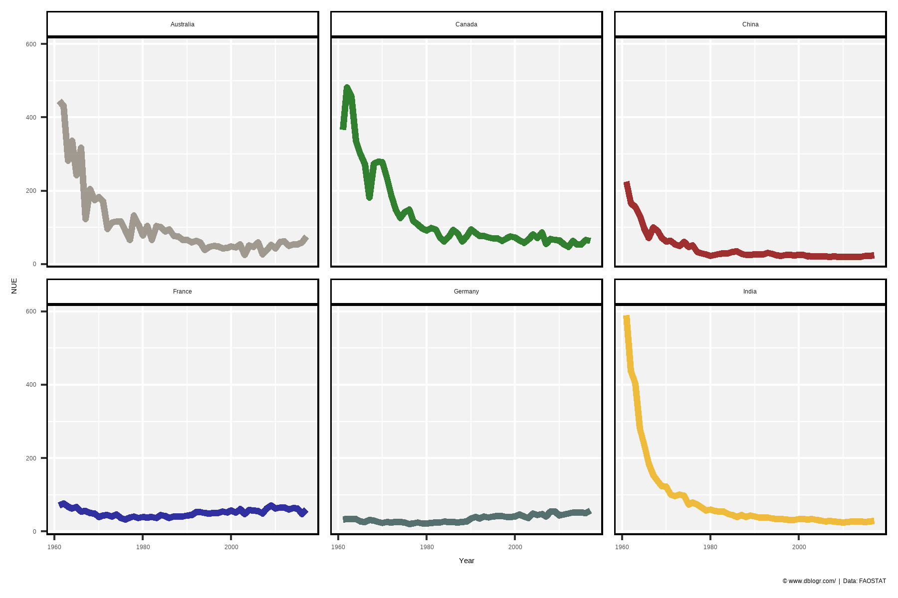
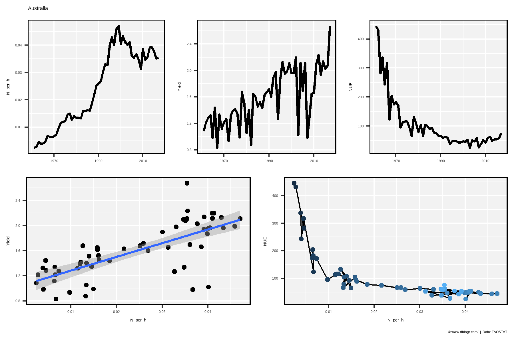
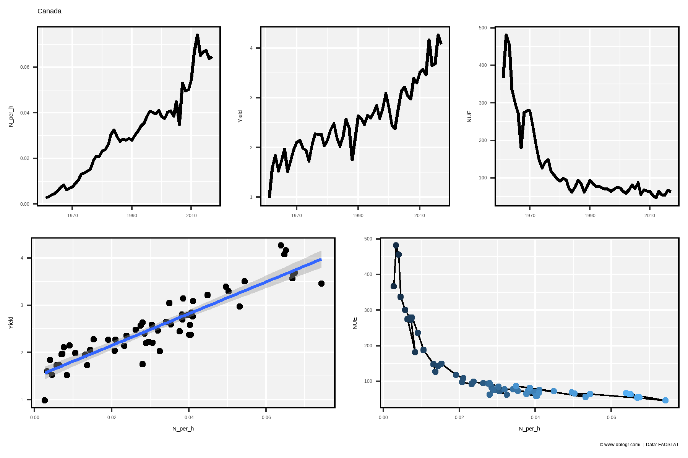
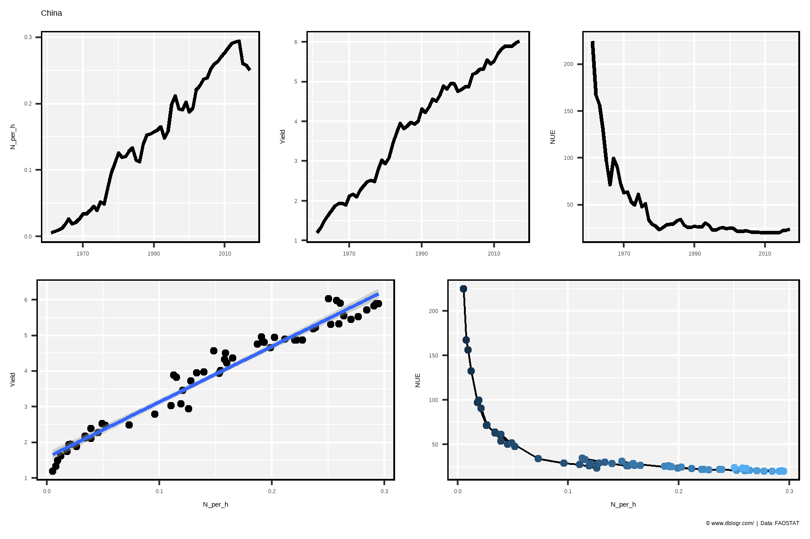
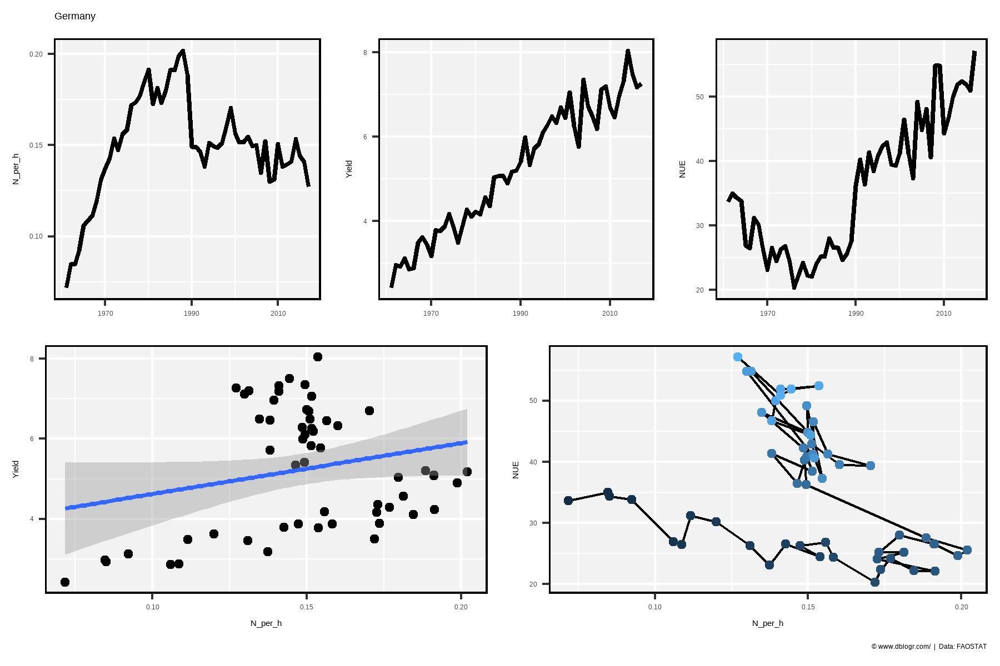
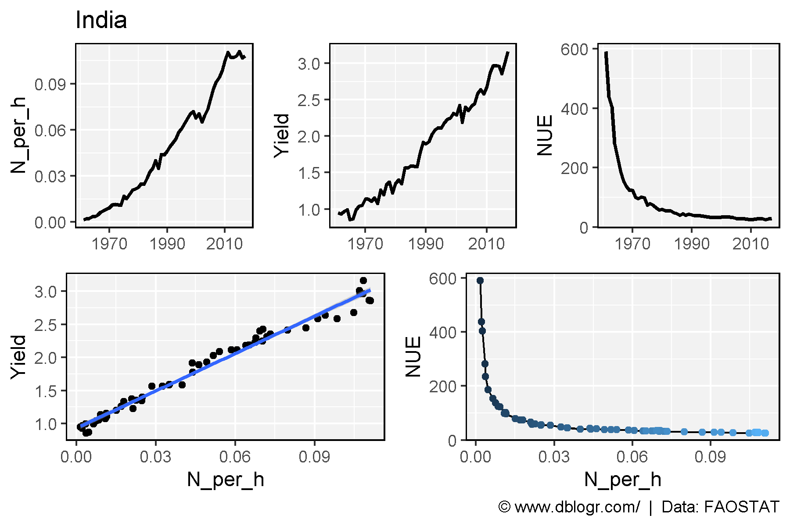
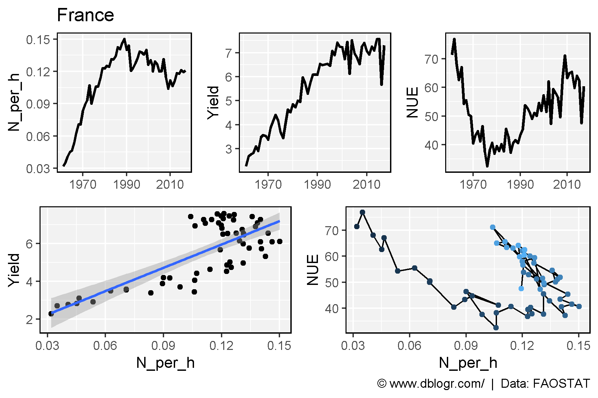

# devtools::install_github("derekmichaelwright/agData")
library(agData) # Loads: tidyverse, ggpubr, ggbeeswarm, ggrepelFormula 1: \(NUE=N_{in Seed}/N_{Available}\)
Formula 2: \(NUE=Yield/N_{Available}\)
x1 <- agData_FAO_Fertilizers %>%
filter(Item %in% c("Nitrogenous fertilizers", "Nutrient nitrogen N (total)"),
Measurement == "Agricultural Use") %>%
select(Area, Year, TonnesN = Value)
x2 <- agData_FAO_Crops2 %>%
filter(Crop == "Cereals", Measurement != "Production") %>%
select(-Unit) %>% spread(Measurement, Value) %>%
select(Area, Year, Yield, `Area harvested`)
x3 <- agData_FAO_LandUse %>%
filter(Item == "Arable land") %>%
mutate(Value = Value * 1000) %>%
select(Area, Year, AgArea=Value)
xx <- left_join(x1, x2, by = c("Area","Year")) %>%
left_join(x3, by = c("Area","Year")) %>%
mutate(Area_P = `Area harvested` / AgArea,
N_per_h = (TonnesN * Area_P) / `Area harvested`,
NUE = Yield / N_per_h)xi <- xx %>% filter(Area == "World")
mp <- ggplot(xi, aes(x = Year, y = NUE)) +
geom_line(color = "darkgreen", size = 1.5, alpha = 0.8) +
facet_wrap(Area ~ .) +
scale_x_continuous(breaks = seq(1960, 2020, by = 10)) +
theme_agData(legend.position = "none") +
labs(x = NULL, caption = "\xa9 www.dblogr.com/ | Data: FAOSTAT")
ggsave("nue_01.png", mp, width = 6, height = 4)
areas <- c("Australia", "Canada", "China", "Germany", "India", "France")
colors <- c("antiquewhite4", "darkgreen", "darkred",
"darkblue", "darkslategrey", "darkgoldenrod2")
xi <- xx %>% filter(Area %in% areas)
mp <- ggplot(xi, aes(x = Year, y = NUE, color = Area)) +
geom_line(size = 1.5, alpha = 0.8) +
facet_wrap(Area ~ .) +
scale_color_manual(values = colors) +
theme_agData(legend.position = "none") +
labs(caption = "\xa9 www.dblogr.com/ | Data: FAOSTAT")
ggsave("nue_02.png", mp, width = 6, height = 4)
ggNUE <- function(area) {
xi <- xx %>% filter(Area == area) %>% arrange(Year)
mp1 <- ggplot(xi, aes(x = Year, y = N_per_h)) +
geom_line(size = 1) +
scale_x_continuous(breaks = c(1970,1990,2010)) +
theme_agData() +
labs(x = NULL, title = area)
mp2 <- ggplot(xi, aes(x = Year, y = Yield)) +
geom_line(size = 1) +
scale_x_continuous(breaks = c(1970,1990,2010)) +
theme_agData() +
labs(x = NULL)
mp3 <- ggplot(xi, aes(x = Year, y = NUE)) +
geom_line(size = 1) +
scale_x_continuous(breaks = c(1970,1990,2010)) +
theme_agData() +
labs(x = NULL)
mp4 <- ggplot(xi, aes(x = N_per_h, y = Yield)) +
geom_point() +
geom_smooth(method = "lm") +
theme_agData()
mp5 <- ggplot(xi, aes(x = N_per_h, y = NUE, label = Year)) +
geom_path() +
geom_point(aes(color = Year)) +
theme_agData(legend.position = "none") +
labs(caption = "\xa9 www.dblogr.com/ | Data: FAOSTAT")
mp1 <- ggarrange(mp1, mp2, mp3, ncol = 3, align = "h")
mp2 <- ggarrange(mp4, mp5, ncol = 2, align = "h")
ggarrange(mp1, mp2, nrow = 2)
}mp <- ggNUE("Australia")
ggsave("nue_03_australia.png", mp, width = 6, height = 4)
mp <- ggNUE("Canada")
ggsave("nue_04_canada.png", mp, width = 6, height = 4)
mp <- ggNUE("China")
ggsave("nue_05_china.png", mp, width = 6, height = 4)
mp <- ggNUE("Germany")
ggsave("nue_06_germany.png", mp, width = 6, height = 4)
mp <- ggNUE("India")
ggsave("nue_07_india.png", mp, width = 6, height = 4)
mp <- ggNUE("France")
ggsave("nue_08_france.png", mp, width = 6, height = 4)
© Derek Michael Wright www.dblogr.com/